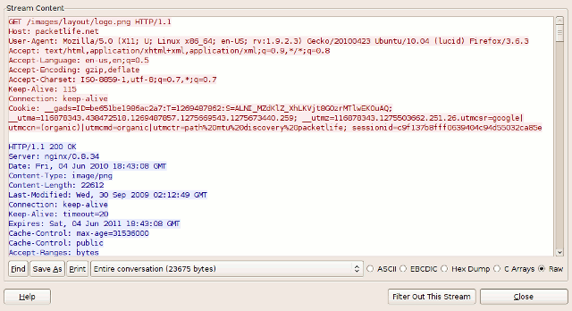

TCP SEQ number and ACK number
本文对TCP的SEQ number、ACK number进行说明。
What is SEQ number and ACK number?
Purpose
在Network\Theory\TCP\Transmission-Control-Protocol.md的“Row3”节，有这样的说明:
Sequence number 和 Acknowledgment number是TCP实现在”4.4 Data transfer“中介绍的“Reliable transmission” 特性的关键。
在Network\Theory\TCP\Transmission-Control-Protocol.md的Guide中，我们已经知道TCP协议要求所有的通信都是request-response的，即
每个request，都会收到一个response，这个response是用于acknowledge的，即对方告诉发送方: 收到了request，我们往往将其称之为ACK response，这样才算是完成了这个请求；
一个完整的请求才会导致SEQ number的增长，也就是说**发送方**是在收到ACK response的时候，才会更新它的SEQ number，或者说SEQ number的计算是基于完整的请求的，而不是基于它所发送的TCP segment( 其中也包括了ACK response)，这就是说ACK TCP segment是不会导致SEQ number的变动的，下面是简单的规则:
- 对于SYN、FIN 请求，SEQ number增长1（这是比较特殊的，后面会解释这样做的原因）
- 对于其他请求，SEQ number增长playload长度
那该协议是如何实现response A是request A的response而不是request B的response呢？是使用sequence number和received sequence number吗？对一个endpoint而言，它的sequence number是单调递增的吗？
简介
miami TCP in a nutshell的**Sequence Numbers**段有着非常好的介绍:
All bytes in a TCP connection are numbered, beginning at a randomly chosen initial sequence number (ISN). The SYN packets consume one sequence number, so actual data will begin at ISN+1. The sequence number is the byte number of the first byte of data in the TCP packet sent (also called a TCP segment). The acknowledgement number is the sequence number of the next byte the receiver expects to receive. The receiver ack'ing sequence number x acknowledges receipt of all data bytes less than (but not including) byte number x.
The sequence number is always valid. The acknowledgement number is only valid when the ACK flag is one. The only time the ACK flag is not set, that is, the only time there is not a valid acknowledgement number in the TCP header, is during the first packet of connection set-up.
Example: packetlife Understanding TCP Sequence and Acknowledgment Numbers
NOTE: 这篇文章，结合Wireshark、具体案例来讲解，非常值得阅读
This article aims to help you become more comfortable examining TCP sequence and acknowledgement numbers in the Wireshark packet analyzer.
Before we start, be sure to open the example capture in Wireshark and play along.
The example capture contains a single HTTP request to a web server, in which the client web browser requests a single image file, and the server returns an HTTP/1.1 200 (OK) response which includes the file requested. You can right-click on any of the TCP packets within this capture and select Follow TCP Stream to open the raw contents of the TCP stream in a separate window for inspection. Traffic from the client is shown in red, and traffic from the server in blue.

NOTE: 从上述图可以看出，它仅仅展示了HTTP的请求、响应，并没有展示TCP的细节。
The Three-Way Handshake
TCP utilizes a number of flags, or 1-bit boolean fields, in its header to control the state of a connection. The three we're most interested in here are:
- SYN - (Synchronize) Initiates a connection
- FIN - (Final) Cleanly terminates a connection
- ACK - Acknowledges received data
As we'll see, a packet can have multiple flags set.
NOTE: 典型的例子就是 SYN-ACK
Select packet #1 in Wireshark and expand the TCP layer analysis in the middle pane, and further expand the "Flags" field within the TCP header. Here we can see all of the TCP flags broken down. Note that the SYN flag is on (set to 1).

Now do the same for packet #2. Notice that it has two flags set: ACK to acknowledge the receipt of the client's SYN packet, and SYN to indicate that the server also wishes to establish a TCP connection.

Packet #3, from the client, has only the ACK flag set. These three packets complete the initial TCP three-way handshake.
Sequence and Acknowledgment Numbers
The client on either side of a TCP session maintains a 32-bit sequence number it uses to keep track of how much data it has sent. This sequence number is included on each transmitted packet, and acknowledged by the opposite host as an acknowledgement number to inform the sending host that the transmitted data was received successfully.
NOTE: 这就是在“What is SEQ number and ACK number?#Purpose”中所介绍的request-response。
When a host initiates a TCP session, its initial sequence number is effectively random; it may be any value between 0 and 4,294,967,295, inclusive. However, protocol analyzers like Wireshark will typically display relative sequence and acknowledgement numbers in place of the actual values. These numbers are relative to the initial sequence number of that stream. This is handy, as it is much easier to keep track of relatively small, predictable numbers rather than the actual numbers sent on the wire.
For example, the initial relative sequence number shown in packet #1 is 0 (naturally), while the ASCII decode in the third pane shows that the actual sequence number is 0xf61c6cbe, or 4129057982 decimal.

The display of relative sequence numbers can optionally be disabled by navigating to Edit > Preferences... and un-checking Relative sequence numbers and window scaling under TCP protocol preferences. However, be aware that the remainder of this article will reference relative sequence and acknowledgement numbers only.
To better understand how sequence and acknowledgement numbers are used throughout the duration of a TCP session, we can utilize Wireshark's built-in flow graphing ability. Navigate to Statistics > Flow Graph..., select TCP flow and click OK. Wireshark automatically builds a graphical summary of the TCP flow.

Each row represents a single TCP packet. The left column indicates the direction of the packet, TCP ports, segment length, and the flag(s) set. The column at right lists the relative sequence and acknowledgement numbers in decimal. Selecting a row in this column also highlights the corresponding packet in the main window.
We can use this flow graph to better understand how sequence and acknowledgement numbers work.
Packet #1
Each side of a TCP session starts out with a (relative) sequence number of zero. Likewise, the acknowledgement number is also zero, as there is not yet a complementary side of the conversation to acknowledge.
(Note: The version of Wireshark used for this demonstration, 1.2.7, shows the acknowledgement number as an apparently random number. This believed to be a software bug; the initial acknowledgement number of a session should always be zero, as you can see from inspecting the hex dump of the packet.)
NOTE: 从“Sequence and Acknowledgment Numbers”节中的配图是可以看出的，ACK number是紧跟在SEQ number后的4字节，可以看到它是
0x00 00 00 00
Packet #2
The server responds to the client with a sequence number of zero, as this is its first packet in this TCP session, and a relative acknowledgement number of 1. The acknowledgement number is set to 1 to indicate the receipt of the client's SYN flag in packet #1.
Notice that the acknowledgement number has been increased by 1 although no payload data has yet been sent by the client. This is because the presence of the SYN or FIN flag in a received packet triggers an increase of 1 in the sequence. (This does not interfere with the accounting of payload data, because packets with the SYN or FIN flag set do not carry a payload.)
NOTE: 简而言之，就是在"What is SEQ number and ACK number?#简介"章节中所述的:
The SYN packets consume one sequence number
Packet #3
Like in packet #2, the client responds to the server's sequence number of zero with an acknowledgement number of 1. The client includes its own sequence number of 1 (incremented from zero because of the SYN).
At this point, the sequence number for both hosts is 1. This initial increment of 1 on both hosts' sequence numbers occurs during the establishment of all TCP sessions.
Packet #4
This is the first packet in the stream which carries an actual payload (specifically, the client's HTTP request). The sequence number is left at 1, since no data has been transmitted since the last packet in this stream. The acknowledgement number is also left at 1, since no data has been received from the server, either.
Note that this packet's payload is 725 bytes in length.
Packet #5
This packet is sent by the server solely to acknowledge the data sent by the client in packet #4 while upper layers process the HTTP request. Notice that the acknowledgement number has increased by 725 (the length of the payload in packet #4) to 726; e.g., "I have received 726 bytes so far." The server's sequence number remains at 1.
Packet #6
This packet marks the beginning of the server's HTTP response. Its sequence number is still 1, since none of its packets prior to this one have carried a payload. This packet carries a payload of 1448 bytes.
Packet #7
The sequence number of the client has been increased to 726 because of the last packet it sent. Having received 1448 bytes of data from the server, the client increases its acknowledgement number from 1 to 1449.
For the majority of the capture, we will see this cycle repeat. The client's sequence number will remain steady at 726, because it has no data to transmit beyond the initial 725 byte request. The server's sequence number, in contrast, continues to grow as it sends more segments of the HTTP response.
Tear-down
Packet #38
After acknowledging the last segment of data from the server, the client processes the HTTP response as a whole and decides no further communication is needed. Packet #38 is sent by the client with the FIN flag set. Its acknowledgement number remains the same as in the prior packet #37.
Packet #39
The server acknowledges the client's desire to terminate the connection by increasing the acknowledgement number by one (similar to what was done in packet #2 to acknowledge the SYN flag) and setting the FIN flag as well.
Packet #40
The client sends its final sequence number of 727, and acknowledges the server's FIN packet by incrementing the acknowledgement number by 1 to 22952.
At this point, both hosts have terminated the session and can release the software resources dedicated to its maintenance.
思考: 为什么SYN和FIN会消耗一个序列号?
在cnblogs TCP 中的Sequence Number中对这个问题进行了回答:
细心的同学可能会发现，为什么在建立连接的时候，发送的 SYN 包大小（payload）明明是0字节，但是接收端却返回 ACK = 1 ，还有断开连接的时候 FIN 包也被视为含有1字节的数据。
原因是 SYN 和 FIN 信号都是需要 acknowledgement 的，也就是你必须回复这个信号，如果它不占有一个字节的话，要如何判断你是回复这个信号还是回复这个信号之前的包呢？
例如：如果 FIN 信号不占用一个字节，回复 FIN 的 ack 包就可能被误认为是回复之前的数据包被重新发送了一次，第二次挥手无法完成，连接也就无法正常关闭了。
思考: 为什么SYN和ACK的初始值（ISN initialization sequence number）是一个随机值?
在cnblogs TCP 中的Sequence Number中对这个问题进行了回答:
ISN是不能hard code的，不然会出问题的——比如：如果连接建好后始终用1来做ISN，如果client发了30个segment过去，但是网络断了，于是 client重连，又用了1做ISN，但是之前连接的那些包到了，于是就被当成了新连接的包，此时，client的Sequence Number 可能是3，而Server端认为client端的这个号是30了。全乱了。RFC793中说，ISN会和一个假的时钟绑在一起，这个时钟会在每4微秒对ISN做加一操作，直到超过2^32，又从0开始。这样，一个ISN的周期大约是4.55个小时。因为，我们假设我们的TCP Segment在网络上的存活时间不会超过Maximum Segment Lifetime（缩写为MSL – Wikipedia语条），所以，只要MSL的值小于4.55小时，那么，我们就不会重用到ISN。
TODO: 思考: SEQ number overflow？
voidcn TCP序列号的最大值
See also
stackoverflow TCP: How are the seq / ack numbers generated?
stackoverflow TCP Sequence Number